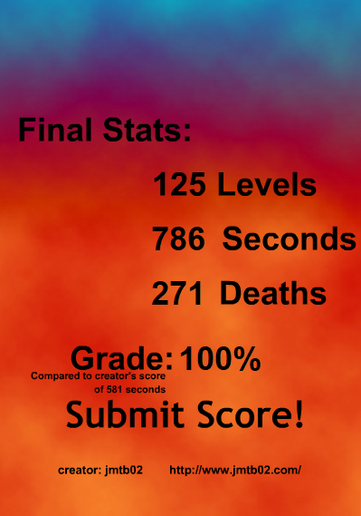

been going back through the flash games i thought were special in my childhood lately. love diving into these lil bubbles of nostalgia every now and then.
thinking about doing a lil series on some of them, undecided on what that'd look like but its been on my mind. i miss streaming flash game friday, that was always a fun time.
in the mean time, here's some quick and dirty looks at some of the games i was returning to
a classic upgrade game mixed with a launcher, with such a cutie hedgehog. i think it's a unique twist to the launcher genre, giving more (but still pretty limited) control to the flight; perhaps not the first of its kind but its definitely early and a major influence on others like learn to fly. love to see the collab with my fav flash dev jmtb02 and iconic flash music man evil-dog
here's my run

another from my hero jmtb02 (love you john), it's the first ball revamped. very much a proof of concept but i still enjoy the jankyness of it all. i kind of like the incremental controls of the ball; it allows for a kind of degree of planning/strategy when attacking any level that then must be executed live. i also kind of like the random ass powerups that range from win the level on the spot to kill the run immediately. that type of thing really only lands in a flash game. no music is a dagger tho.
the other games in the series improve on this formula but i still enjoy coming back to where it all started.
here's my run (total was just above 1440s)

this is more like it. i really like the unique areas and they each have their own music, although it is just a 15s loop per area, its enough to not get stale. ball physics made much smoother, and the ball is smaller for tighter level design. a much faster game overall, feels more skill based and less planning based than the first. rip to the random powerups tho, you will be missed (sorta)
my child brain adores boss fights, so running into one in this ball game highkey knocked my socks off. it rules. my fingees were def getting tired after this one tho, think i'll recharge before playing 3 again.
the run

if you beat 7 days in hedgehog launch or 1440s in ball revamped or 786s in ball revamped 2, let me know and i'll buy you a coffee or something for besting me